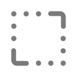

BuddyHQ.AI
2025An AI content engine that turns customer feedback into branded, publish-ready marketing assets.
Adapting Neartail's desktop website builder for the small business owners who run their world from a phone.

Mobile web design
Sequential to desktop
Senior led desktop foundation
You launched your site with Neartail last month. Today you got a new order for a custom cake. You want to add it to your menu right now, before it slips your mind. You're on the bus. You have a phone.
If editing your site requires a laptop, you'll forget. If it works on the phone but it's painful, you'll forget too. The builder needs to be as quick as opening WhatsApp.
The desktop builder worked because it had room a left panel for pages and sections, a centered live canvas, and contextual controls that appeared inline on click. None of those affordances exist on a 380px screen. The vision had to flip: the canvas is the screen, and everything else gets summoned on top of it, only when needed.
Behind the surface “make it mobile” framing, there were two specific problems that took the bulk of the month:
These weren't independent. Solving touch created the hierarchy problem (more layered surfaces = more things to navigate between). Solving hierarchy constrained which touch patterns I could use (deeper hierarchy = more taps, which kills the speed goal).
I walked every desktop interaction and asked: does this exist because of the canvas, or because of the cursor? Cursor-bound interactions had to be redesigned. Canvas-bound ones could often stay. From that audit, four rules emerged.
The user came to edit their website the website should dominate the screen at all times, even while editing. No persistent drawer, no fixed sidebar, no top tab bar competing. Editing surfaces appear over the canvas, never beside it.
Three tiers, each with a clear job. Single tap selects. Bottom sheet handles quick edits (text, colour, toggle). Full-screen modal handles deep edits (image picker, layout swap).
Drag-and-drop on a phone is a precision sport mobile users keep losing. Section reordering uses long-press to lift, then tap-to-place confirmable, undo-able, forgiving. The user always knows what's selected and where it'll land.
Desktop's superpower was that doing nothing already gave you a good website. Every mobile control inherits its desktop default. Users never have to touch a setting to ship — they just touch the ones they care about.
The desktop builder's signature was inline editing click a section, controls appear on it. That precise pattern doesn't survive on a phone, because controls + finger + canvas = the user's thumb covers the thing they're editing. The mobile equivalent had to feel as direct without breaking that physics.
A single tap selects a section. A subtle highlight appears on the canvas. No editing UI yet just confirmation that the user has the right thing.
A quick-edit sheet rises from the bottom: text, colour, layout toggle. Half-screen. The selected section stays visible. Most edits never go deeper.

For complex edits image library, layout swap, content rewrite the sheet expands to a full-screen modal. The editing tool takes over; the user re-enters context on close.


The interesting decision wasn't the bottom sheet itself that's a known mobile pattern. It was which controls go in which tier. Anything the user might toggle without thinking belongs in the sheet. Anything that needs full attention belongs in the modal. The audit gave a clean classification: ~70% of desktop's contextual controls fit in the sheet, ~30% needed the modal.
Preview and publish followed the same logic. The canvas is the preview dismissing the editing surfaces leaves exactly what a visitor sees. No mode switch, no reload. Publishing is a single floating action that only appears when something has changed.
The mobile adaptation ran for about a month, after the desktop builder shipped. My senior who'd led the desktop work was the first reviewer on every mobile call. The constraint that made this productive: he'd already built the system, so every component change I proposed was a conversation about whether the mobile pattern broke a desktop assumption.
Walked every desktop interaction. Classified what carries over. Drafted the four translation rules. Got senior alignment before drawing screens.
Designed the navigation model and three-tier editing flow. Iterated with engineering on what was build-feasible inside the existing codebase.
Specced edge cases, long section names, empty states, network-loss publish. Handed off to the same engineering team that shipped desktop.
The mobile builder shipped as part of the same Neartail product on Google Workspace Marketplace. The metrics below are the product's marketplace metrics the mobile work contributed by giving existing users a way to actually use the builder where they live: their phones.
Rated on Google Workspace Marketplace, from real business owners using the product in production.
Installs on Google Workspace Marketplace, the product is live and publicly available.
Live websites built with Neartail, many of them edited on mobile.
Mobile builder shipped to production, full edit, preview, and publish flow on a phone.
Going from desktop to mobile isn't shrinking, it's re-deciding with new physics. The principles can carry over, but the patterns almost never should. The job is to honour the foundation, not preserve its shape.
On desktop, “inline” meant controls appeared on the section. On mobile, they have to leave it so the thumb doesn't cover it. The principle survived. The literal pattern didn't. Knowing which is which is the whole skill.
Always-visible nav feels safe but eats the screen. On a phone, where the canvas is the product, a hidden-by-default panel that opens with one tap was the better trade. The cost of one tap is smaller than the cost of permanent UI.
Inheriting a foundation forces a useful discipline, you stop redesigning for ego, and start asking which changes actually earn their place. Restraint becomes the design move.
Feature parity was never the hard part, most desktop controls have a mobile equivalent. The hard part was where each control lives: tap, sheet, or modal. Hierarchy is the design product on mobile.